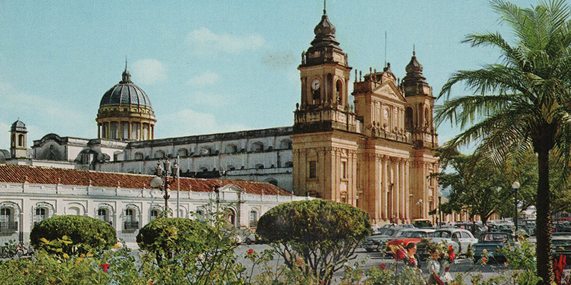

Palacio Arzobispal de la Ciudad de Guatemala
Al trasladar la ciudad capital al Valle de la Ermita se comenzaron a hacer planes para la construcción
de los nuevos edificios. La Nueva Guatemala de la Asunción tendría,
por lo tanto, una plaza con sus principales edificios en ella.
El arquitecto Marcos Ibáñez Bernasconi fue quien participó en la
elaboración de los planos de la Catedral Metropolitana.
Así como el diseño del Palacio Arzobispal y la fuente monumental en el centro de la plaza mayor.
Entre 1779 y 1792, el Arzobispo de Guatemala, Cayetano Francos y Monroy,
también lideró el diseño de los planos y la construcción del Palacio Arzobispal.
Incluso se encargó por su parte de la edificación de la catedral, hasta su muerte.
Después de varios intentos de formalizar el proyecto,
en 1783 se cedieron las cédulas que permitían el inicio de la construcción del Palacio Arzobispal.
De esta forma, se realizó el edificio en el costado nororiental de la plaza mayor,
al lado de la catedral de la nueva ciudad.
Esta fue una de las construcciones más importantes de la ciudad, junto con los edificios del gobierno.
Posteriormente, pese a no pertenecer a ningún edificio del ayuntamiento ni a los de la ley,
el edificio del arzobispo se consideró de utilidad pública.
Se había impuesto que se agregaran tres lugares públicos. Entre estos,
la cárcel de corona, el despacho de negocios forenses del arzobispo
y de sufragáneas y el tribunal para la realización de audiencias públicas.
Además, se pidió que se incluyera un espacio destinado para el tribunal.
También era necesario una pieza para el archivo de los papeles.
